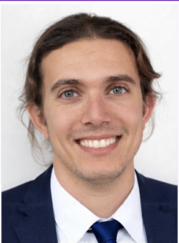
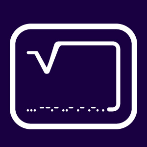
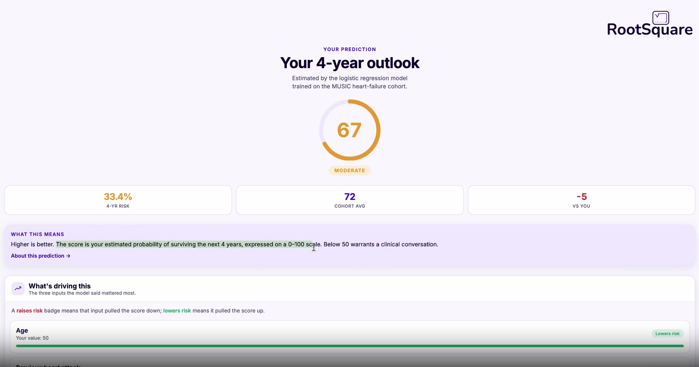
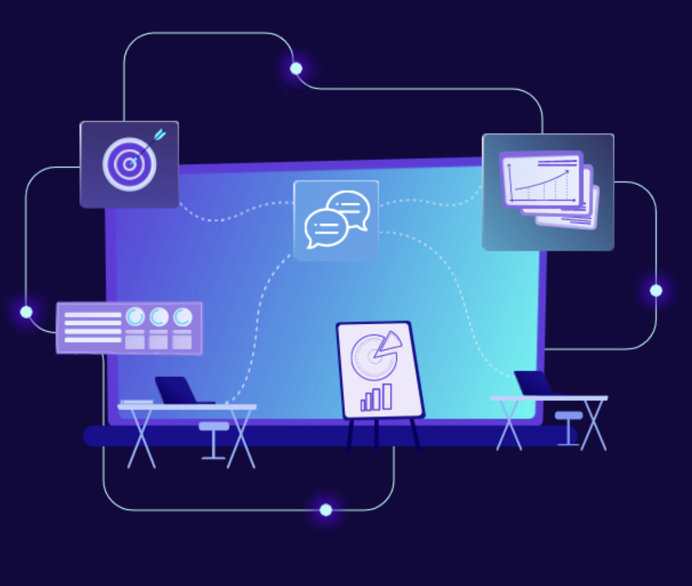
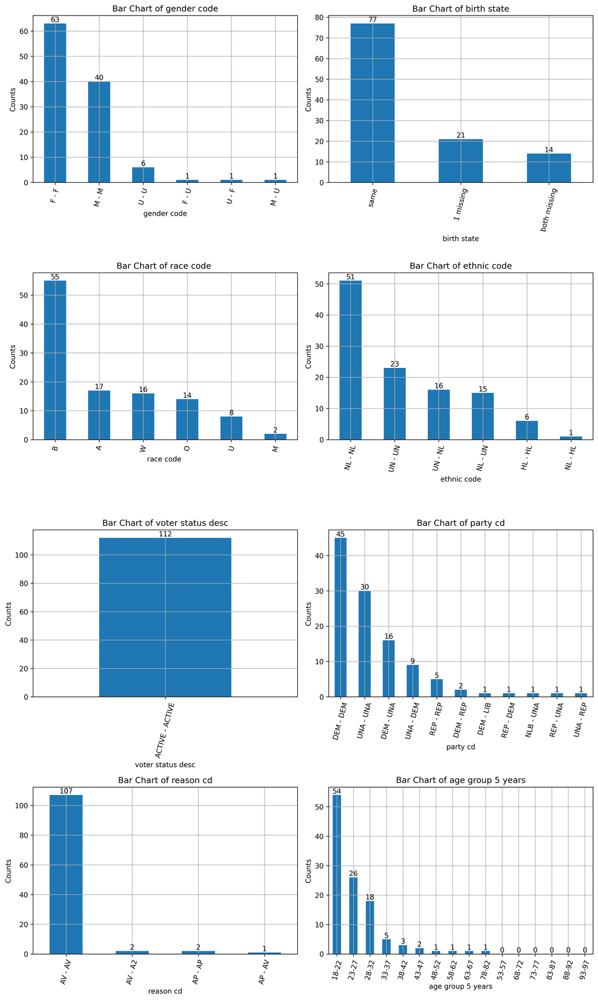

Panayiotis Petousis, PhD
Founder · LLMs, agentic AI & healthcare AIUCLA Health and UC-wide deployment experience · Bayesian networks, ML, and clinical LLMs
LinkedIn ↗LLM & agentic AI consulting
RootSquare builds custom LLM applications and agentic AI solutions that reason across data, use tools, automate complex workflows, and keep people in control. Our expertise also includes explainable AI, Bayesian decision support, multimodal AI, and entity resolution.

ROOTSQUARELLM, agentic & custom AI solutions
We create LLM applications and AI agents around specific decisions and workflows, combining trusted data, tool use, clear explanations, safeguards, and human review.

An AI agent that estimates four-year survival, explains its most important drivers, and returns validated literature findings on factors associated with lower or higher risk.
View ILAMEE project →
A healthcare decision-support system that updates probabilities as evidence changes, showing its reasoning and uncertainty instead of hiding them behind a prediction.
View Bayesian AI project →A custom computer-vision and record-matching workflow with human verification that reduced manual work from days to minutes.
View multimodal AI project →
An entity-resolution system for identifying duplicate people and records across noisy datasets while distinguishing close family relationships.
View data deduplication project →How we work
We follow CRISP-DM—the Cross-Industry Standard Process for Data Mining—and adapt it for modern AI, LLM, and agentic systems.
Tell us what you are working on →Define the problem, desired outcome, users, and measures of success.
Explore the available data, its quality, and what it can support.
Clean, connect, and structure the data for reliable use.
Build and refine the most appropriate AI or data solution.
Test performance, safety, explainability, and business value.
Integrate the solution into a practical, monitored workflow.
AI specialists
RootSquare combines research-grade AI knowledge with practical experience designing agentic, explainable systems for clinical, operational, and public-data workflows.

UCLA Health and UC-wide deployment experience · Bayesian networks, ML, and clinical LLMs
LinkedIn ↗Data deduplication and entity resolution · Natural language processing and LLM systems · Applied machine learning and data analysis
LinkedIn ↗LLM & agentic AI consulting
Talk with RootSquare about agentic workflow automation, retrieval-augmented generation, tool-using AI agents, Bayesian decision support, multimodal AI, or entity resolution.